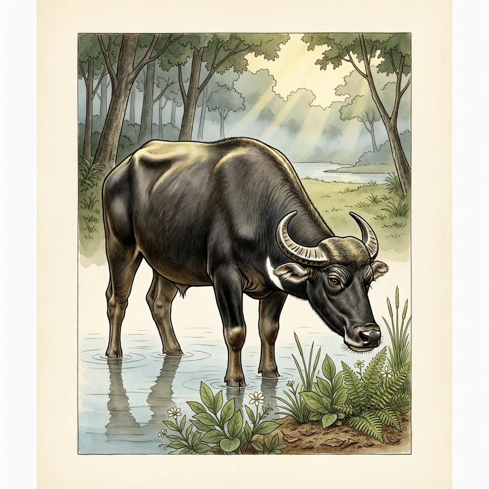
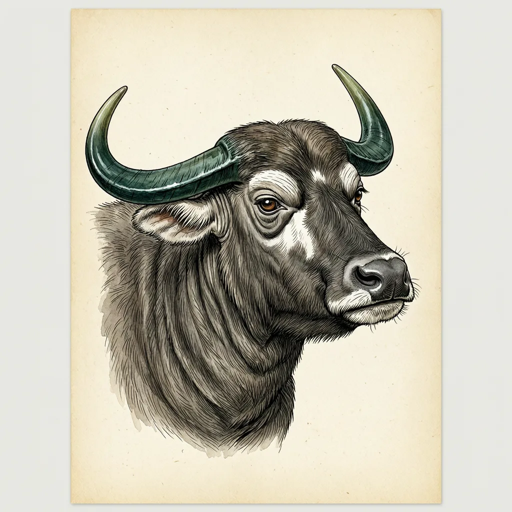

低地水牛是世界上最小的水牛之一，外形似鹿，产于西里伯斯岛的低地森林。它通常单独或成对活动在水边，吃水生植物的嫩枝叶；雌雄都长短而扁平的角，被敌人紧逼时像匕首一样顶刺。列入《濒危野生动植物种国际贸易公约》附录Ⅰ，IUCN评级濒危。
高约85cm、体重150-300kg，站在浅水里的低地水牛很容易被当成一只大号的鹿。它住在印度尼西亚西里伯斯岛的原始低地森林，通常单独或成对待在水边，白天与傍晚活动，中午休息，喜欢泡在水里。这片林子给它三样东西：能藏身的矮树丛、能降温的水、随时可吃的水生植物嫩枝叶。多数牛科动物成群活动，低地水牛不这样，更常见的是一个或两个个体待在同一片水边。
低地水牛跑不快：行动迟缓，不擅长跳跃，即使奔逃也是慢吞吞的。雌雄都长一对墨绿色的角，扁平、生于前额、角尖向后；穿越矮树林时，它会把角靠在脖颈上，防止被枝条钩住。跑不掉的时候只能打——被敌人紧逼时，低地水牛是非常危险的对手，短角会像匕首一样发起攻击。
光是“水牛”两个字就想错了一半：低地水牛外观似鹿，毛色黑褐，雄性比雌性颜色更深，头上和四肢下部有白色标记，咽喉处一道白色月牙。它的繁殖节奏也慢：孕期9个多月，一胎一仔，6至9个月断奶，2至3岁性成熟，寿命可达28至30年。刚出生的幼仔是红褐偏橙的，和深色的母亲待在同一片水边，很难看出是同一个物种。
